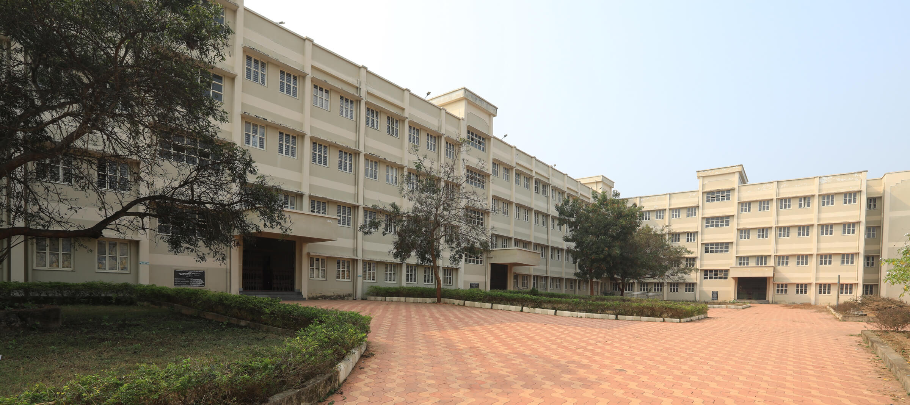
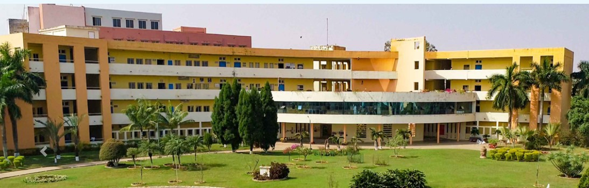

5.MBA COLLEGES
1. XIMB BHUBANESWAR
Established in 1987, Xavier Institute of Management, Bhubaneswar (XIMB) is a part of XIM University situated in Bhubaneswar, Odisha. XIMB offers postgraduate and doctoral programmes in Management and Business Administration like M.B.A Business Management, Executive M.B.A Business Management, Ph.D Managemen t, Ph.D Management Part Time and more. Admission to XIMB is based on the results of the XAT/CAT/GMAT/X-GMT /NMAT (for select programmes). Xavier Institute of Management, XIM University is ranked 35th institute of the country in the Management category in the NIRF 2022 ranking. XIMB is Accredited by SAQs and is UGC recognized. The XIMB MBA-BM programme is also accredited by National Board of Accreditation (NBA). other areas.
2. KSOM BHUBANESWAR
KIIT School of Management (KSOM), Bhubaneswar was established in the year 1993. B.B.A, M.B.A, Super M.B.A, Ph.D Management and Ph.D Part-time are the courses offered by the KSOM Bhubaneswar. Admission to the courses will be done on the basis of the marks scored in the national/state/university-level examinations. Further, candidates have to appear for a personal interview. KIIT School of Management also provides scholarships to students in the form of tuition fee waivers. In the placement drive 2022, Rs. 23.5 lakhs was the highest salary package bagged by a student. KSOM Bhubaneswar is affiliated to KIIT University.
3. UTKAL UNIVERSITY BHUBANESWAR
Utkal University Bhubaneswar is a public state university established in the year 1943. The university is approved by the University Grants Commission (UGC). It has been accredited by the National Assessment and Accreditation Council (NAAC) with an ‘A+’ grade. With a campus covering an area of 399.9 acres, Utkal University has 27 postgraduate departments. Fourteen PG departments of the University have been granted Departmental Research Support/Centre of Advance Studies status by the University Grants Commission. Presently, 381 colleges are affiliated with the university. The university has secured 87th rank in the University category in NIRF 2021 Ranking with an overall score of 39.8 out of 100. It had secured 96th rank in the same category in NIRF 2020 Rankings.

4. NIT ROURKELA
National Institute of Technology Rourkela is a public university established in the year 2002. It is also known as NIT Rourkela. The university was granted autonomy in 2007 and became one of the NITs. The skilled and experienced faculty is responsible for the ever-growing reputation of NIT Rourkela. The university is ranked 20th as per the NIRF Ranking for Engineering category, 2021 and 41 according to overall NIRF Ranking, 2021. NIT Rourkela secured 31 rank in the research category in the NIRF 2021 Ranking. NIT Rourkela has academic departments related to the fields of Engineering, Science, Humanities and Management. The institute offers courses at undergraduate, postgraduate and doctoral levels in various disciplines.
5. RAVENSHAW UNIVERSITY CUTTAK
Ravenshaw University Cuttack was established in 2006 and is a public co-ed university that offers a wide variety of courses to its students. RU Cuttack has more than 8,000 enrolled students and has more than 100 faculty members. The campus has a size of 80 acres. RU Cuttack has been approved by the UGC and has been accredited by NAAC with an A grade. Ravenshaw University Cuttack courses are 69 in number and are available at the UG and PG levels. RU Cuttack courses have many specializations. Many facilities are also provided to the students and the staff by the university. RU Cuttack facilities include medical facilities, hostel facilities, sports, library, WiFi, IT infrastructure, guest rooms, etc. Ravenshaw University Cuttack scholarships are offered to the students to support them with their studies. The scholarships offered by the university include the state government, central government, and UGC scholarships.

6. SAMBALPUR UNIVERSITY
Sambalpur University was established in 1967 and is a government university that offers a wide variety of courses to its students. Sambalpur University has more than 25,000 enrolled students and has more than 100 faculty members. The campus has a size of 670 acres. Sambalpur University has been approved by the UGC and has been accredited by NAAC with an ‘A’ grade. Sambalpur University courses are 60 in number and are available at the UG and PG levels. Sambalpur University courses are available with many specialisations. Many facilities are also provided to the students and the staff by the university. Sambalpur University facilities include medical facilities, hostel facilities, sports, library, WiFi, IT infrastructure, etc. Sambalpur University scholarships are offered to the students to support them with their studies. The scholarships are Prerana and Medha scholarships for SC/ST/OBC students, Rajiv Gandhi National Fellowship, and also the scholarships offered by UGC, central and state governments.

7. CGU BHUBANESWAR
CV Raman Global University (CVRU), Bhubaneshwar is a renowned technical education institute established in 1997 and approved by the All India Council for Technical Education (AICTE). CV Raman Global University, Bhubaneswar aims at providing effective and quality education to learners. The institute has always been quick in embracing fast-paced technical education reforms by introducing smart classrooms, well-equipped libraries and labs to match national and international standards of education. According to the NIRF Engineering Ranking 2021, the university has bagged the 100th position. In last year (NIRF 2020 Ranking), the varsity was placed in 93rd position. CVRU offers undergraduate (B.Tech) and postgraduate (M.Tech.) degrees in various engineering streams such as electrical, electronics and telecommunications, mechatronics etc. CVRU is affiliated to the Biju Patnaik University of Technology and comes under CV Raman Group of Institutions. The admission process in CVRU is done through C.V Raman Global University All India Entrance Test (CGET-2020), JEE Main, OJEE, CAT, MAT, XAT, PGAT, GATE and ATMA.

8. BERHAMPUR UNIVERSITY
The Berhampur University came into existence in the year 1967, inaugurated by Dr A.N. Khosla, the then Governor of Orissa and the first chancellor of the university. The university offers both UG and PG courses in various programs for interested candidates. However, admissions to these courses may require an entrance test or merit of candidates. Berhampur University provides a well-equipped infrastructural facility for its students and staff to make their learning environment safe and more inspiring to learn and gain knowledge from. Priority is given to student’s skill development, both practically and theoretically to pave ways to enhance paths to their careers.

9. SOA BHUBANESWAR
Siksha 'O' Anusandhan (SOA), Bhubaneswar was established in the year 2007. The campus is spread over 452 acres of land. Siksha ‘O’ Anusandhan is accredited by the National Assessment and Accreditation Council (NAAC) and the National Board of Accreditation (NBA). The university is also recognised by the University Grants Commission (UGC). In the NIRF 2022 Ranking, it has been ranked 10th in the dental category, 18th rank in the Medical category, 16th rank in the university category, 27th rank in the engineering category and 45th rank in the research category. The university has a total of 1317 faculty members and the total student enrollment is 12913.The Siksha 'O' Anusandhan, Bhubaneswar also has ICAR accredited programmes. Siksha 'O' Anusandhan, Bhubaneswar has been established with an aim of educating the students to become and transform into a responsible, productive and enlightened citizens. The university shapes the applicants to develop into a more enlightened individual. The university provides courses at the undergraduate, postgraduate and doctoral levels. Scholarship and placement opportunities are also provided to the students.

10. GIET UNIVERSITY GUNUPUR
GIET University, Gunupur is a private state university established in the year 1997 by Vidya Bharati Educational Trust. The university is approved by the University Grants Commission (UGC) and the All India Council for Technical Education (AICTE). The campus of GIET University is spread over an area of 113 acres. The total faculty strength of the varsity is 303 and the total student enrollment is 2290. As per the official website of the university, its mission is to create an innovative and committed workforce to cater to the societal, environmental and economic needs of the Nation.The university offers 50 courses at three levels: diploma, undergraduate and postgraduate. Three B.Tech courses - B.Tech Chemical Engineering, B.Tech Computer Science and Engineering and B.Tech Mechanical Engineering are accredited by the National Board of Accreditation (NBA). GIET University has collaborations with a large number of overseas universities. The varsity provides an ample number of placement and internship opportunities to students. GIET University campus has modern and upgraded facilities for students.